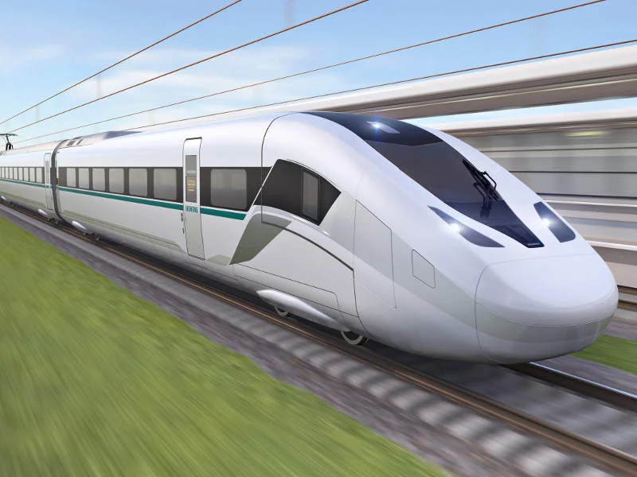
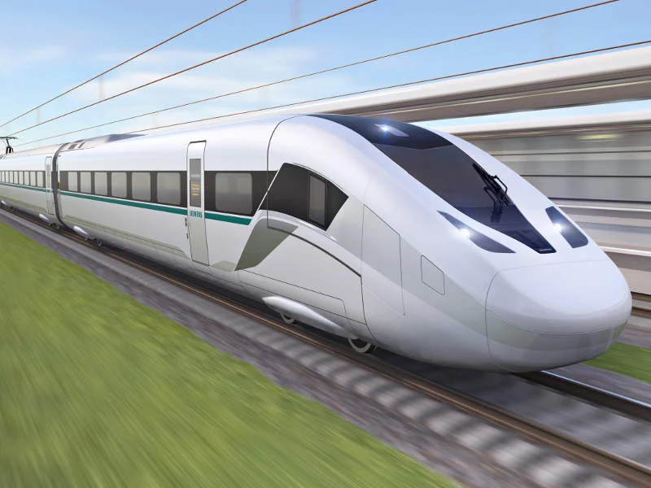

Siemens Velaro Novo
Високоскоростният влак от Siemens, съчетаващ ефективност, иновация и устойчивост.
 


Преглед
Siemens Velaro Novo е новото поколение високоскоростни влакове на Siemens, проектирано за максимална енергийна ефективност и устойчивост. Този влак предлага висока скорост с ниски разходи за експлоатация, което го прави отличен избор за устойчиво пътуване.
Основни характеристики
- Скорост: Максимална скорост от 360 км/ч
- Енергийна ефективност: С 30% по-малко енергийна консумация от предишни модели
- Устойчивост: Изработен с материали, които намаляват въздействието върху околната среда
- Комфорт: Просторен интериор, тихи кабини и ергономични седалки
Технология
Siemens Velaro Novo включва авангардна технология за аеродинамика и енергийна ефективност. Влакът е проектиран да бъде лек и с възможност за бърза поддръжка, като същевременно осигурява висока производителност и комфорт на пътниците.
Услуги на борда
Влакът предлага различни удобства, включително Wi-Fi, електрически контакти на всяка седалка, широки пространства за багаж и модерни системи за климатизация. Siemens Velaro Novo предлага различни класове за пътуване, всеки с висок стандарт на комфорт.
Спецификации
| Скорост | 360 км/ч |
|---|---|
| Дължина | 200 метра |
| Капацитет | 500 пасажери |
| Оператор | Deutsche Bahn |